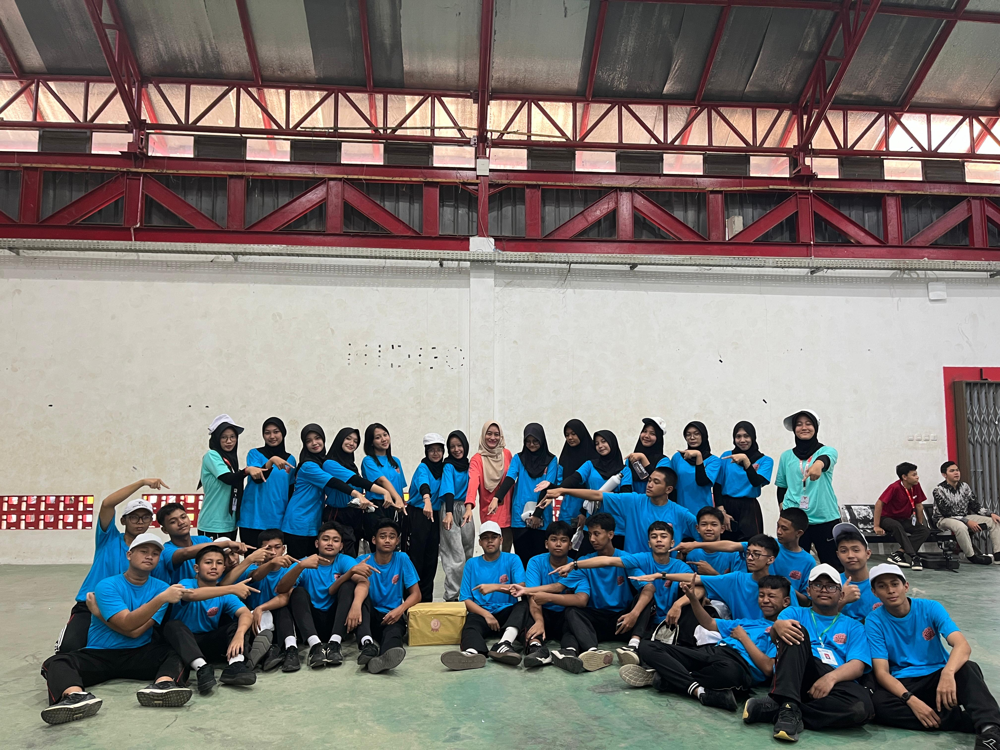
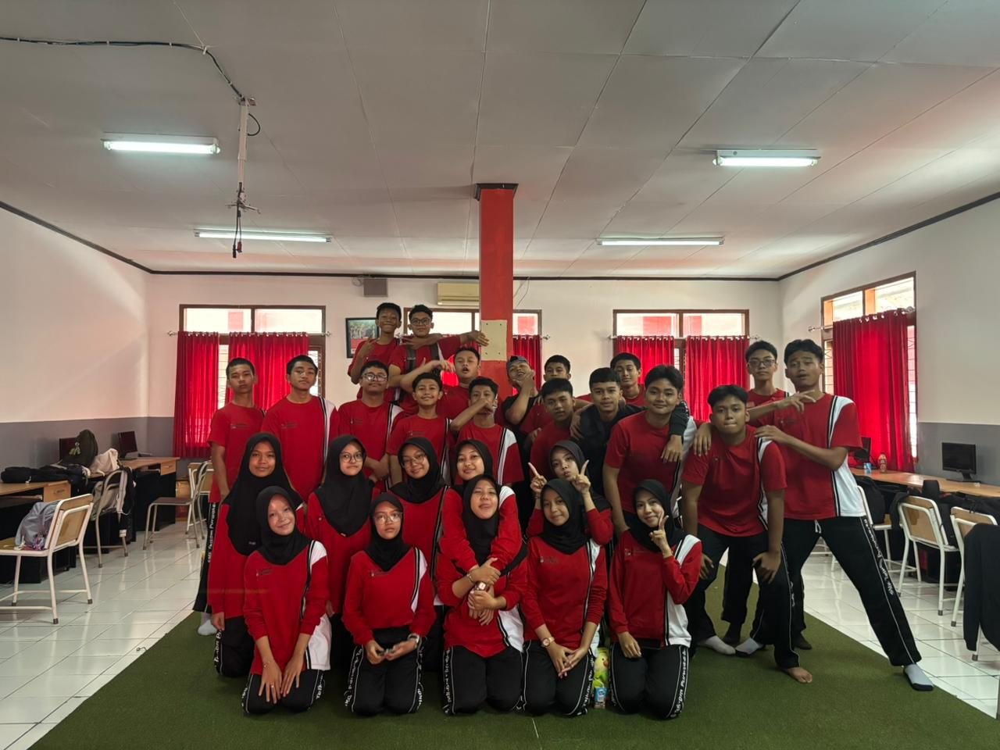
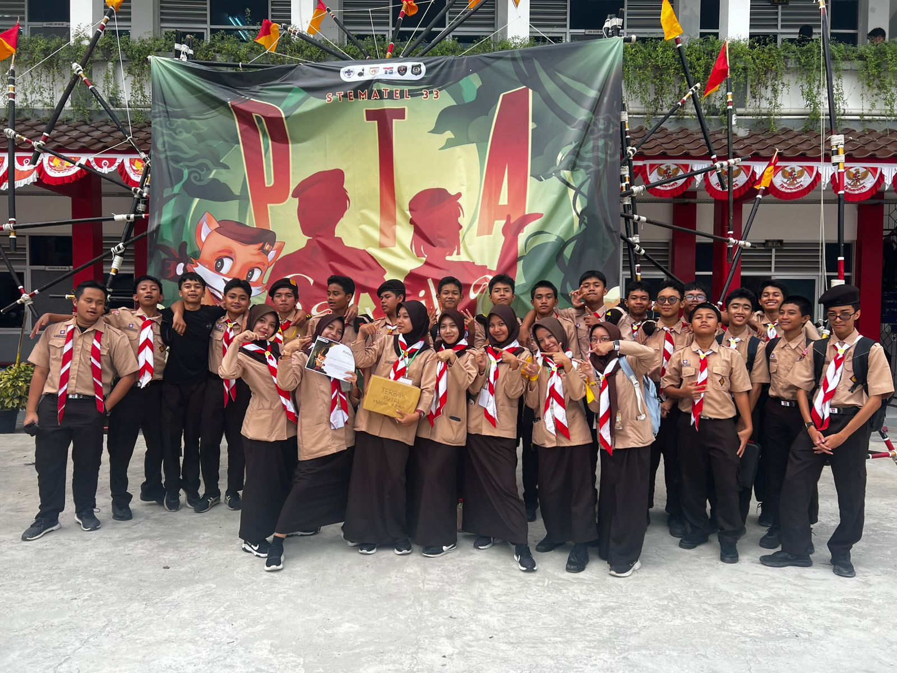
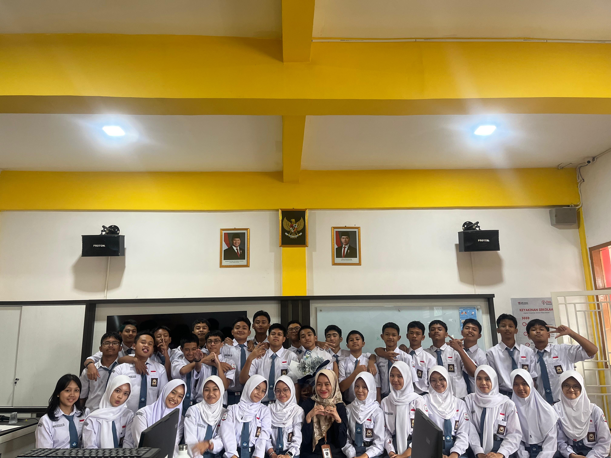
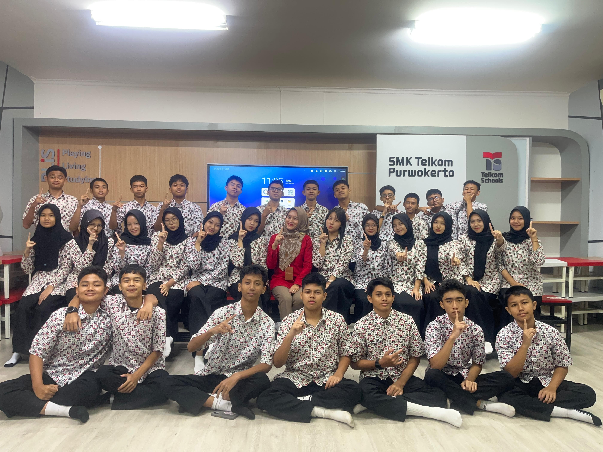
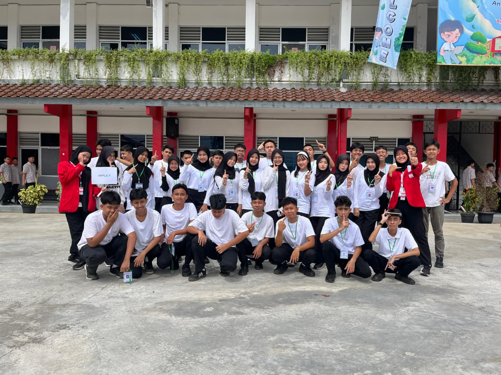

Selamat Datang di Website Kelas XPPLG 1
Kami adalah siswa dari SMK Telkom Purwokerto jurusan PPLG. Website ini dibuat untuk memperkenalkan kelas kami dan menyimpan kenangan bersama.
Kenangan Bersama Teman-teman XPPLG 1
Beberapa momen terbaik kami selama perjalanan di SMK Telkom Purwokerto.






Anggota Kelas XPPLG 1
Jadwal Kelas
| Hari | Pelajaran |
|---|---|
| SENIN | INGGRIS DPK A SENI BUDAYA |
| SELASA | MTK PJOK PPC PAI |
| RABU | INA PAS |
| KAMIS | INF JAWA SEJARAH BK |
| JUMAT | MTK DPK C DPK B |
Sosial Media
Ikuti kami di media sosial untuk update terbaru dari kelas XPPLG 1.